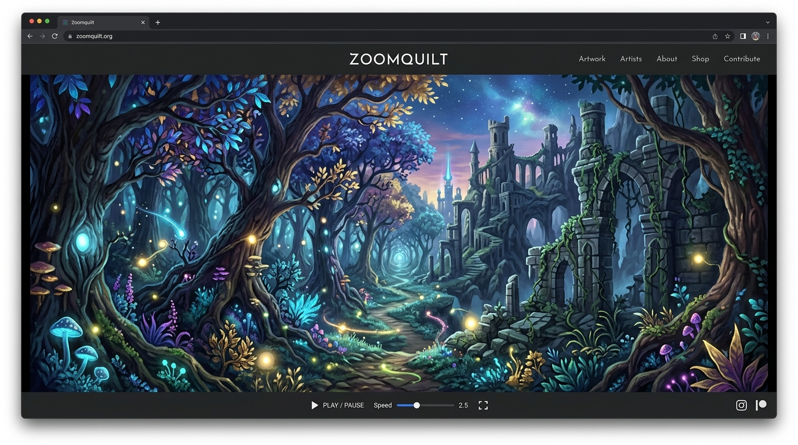
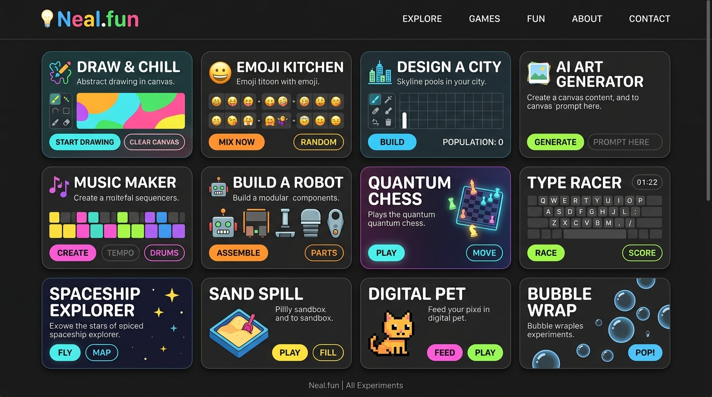
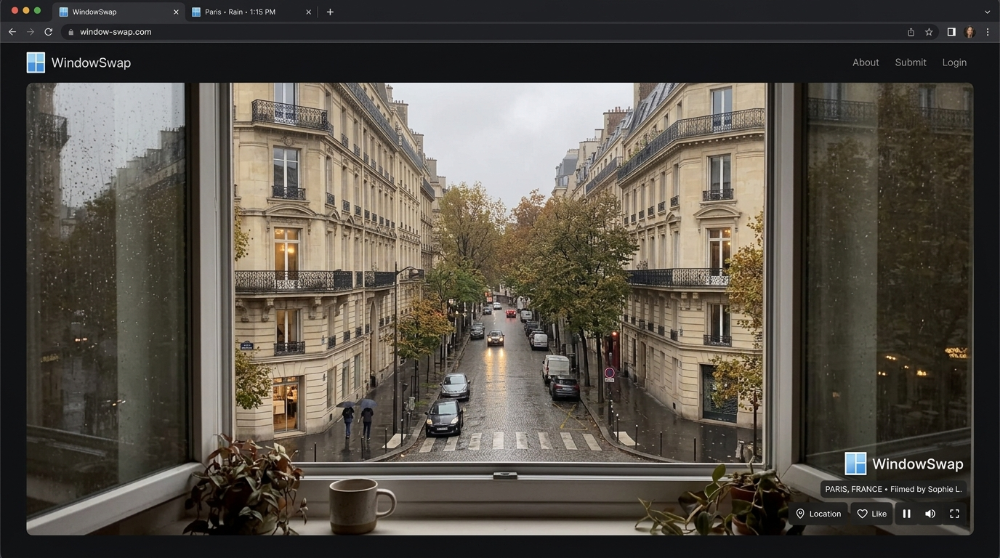
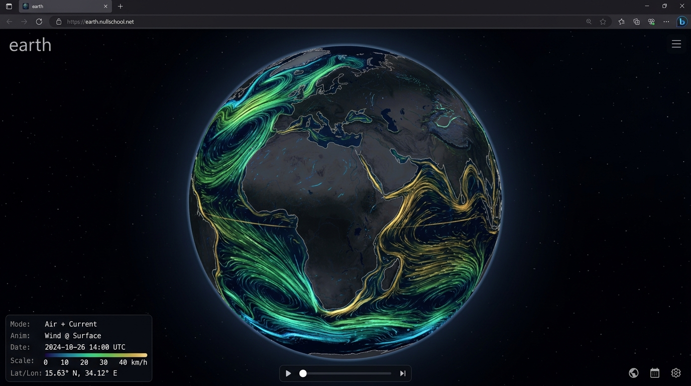

Discover the unseen
A living index of the overlooked, the unusual and the quietly brilliant. Hand-picked by humans. Built for the curious.
Find your next
rabbit hole.
Nine hand-picked signals from the edges of the web. Search the index, filter by obsession, or let the algorithm of chance decide.
No signal found
Try a different word, or reset the index and wander again.
Lose yourself
on purpose.
Small maps for big detours. Each collection is a hand-built trail through a particular flavour of the web — no rankings, no engagement loops.

01The Weird Internet
Strange, surprising, unforgettable.

02100 Websites Everyone Should Visit
Essential internet experiences.

03Beautiful Portfolios
Exceptional personal websites.

04Hidden Gems
Underrated websites worth getting lost in.
The best parts of the internet are not on the first page.
Search engines optimise for answers. We optimise for curiosity. ATLAS is a slow, human-built index of places that make the web feel larger — experiments, archives, toys, oddities and small acts of digital craft. No infinite scroll. No growth hacks. Just a door.
Know a strange
corner we missed?
Send us a link with one sentence about why it deserves to exist in the index. We read everything. We publish the good ones.
Submit a signal ↗